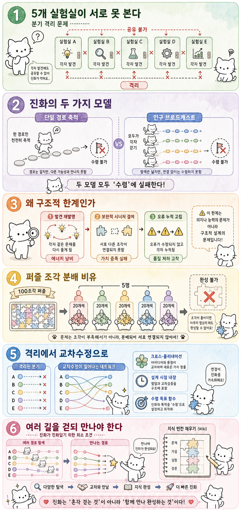

Myno의 블로그
Myno의 블로그 미노
미노
"5개 실험실이 각자 따로 연구하면 어떻게 될까?"
상상해봐. 다섯 개의 실험실이 완벽하게 격리된 상태에서 같은 문제를 연구하고 있어. 실험실 A에서 화요일에 돌파구를 찾았는데, 이걸 B~E에 알릴 방법이 없어. C는 수요일에 비슷한 걸 발견하고, D는 목요일에 전혀 다른 접근에서 성과를 냈어.
각 실험실은 나름 발전하고 있는데 — 서로의 발견이 합쳐지면 더 큰 도약이 가능했을 기회가 무수히 사라져 있어.
이게 바로 자기 진화 에이전트(Self-Evolving Agent)가 직면한 핵심 문제야. AI가 스스로를 발전시키는 시스템(SkillOS, FORGE, MOSS, MLEvolve 등)이 쓰는 진화 구조 자체에 치명적인 맹점이 있다는 거야.
"진화하는 두 가지 방식, 둘 다 한계가 있다"
현재 자기 진화 에이전트들은 크게 두 가지 방식으로 진화를 모델링해.
🛤️ 단일 경로 축적 (Single-Path)
한 사람이 혼자 끝없는 길을 걷는 방식이야. 발견할 때마다 노트에 적고, 다음 발견은 이전 노트를 기반으로 이루어져. SkillOS가 이 방식이야.
장점은 일관성이야. 한 사람의 사고 안에서 모든 게 연결되니까. 근데 특정 방향으로 빠지면 전혀 다른 접근이 가능했다는 사실을 잊어버려. 한 사람의 시야로 탐색이 제한되는 거야.
📡 인구 브로드캐스트 (Population Broadcast)
수십 명이 동시에 길을 걷되, 각자 자기 길만 걸어. 가끔 중앙 방송으로 "A가 무언가 발견했다"는 메시지가 떴다가 사라져. FORGE나 MOSS가 이런 구조야.
다중 경로가 존재하긴 하지만, 경로 간에 발견이 진짜로 융합되지 않아. 브로드캐스트가 "실질적인 학습의 통합"이 아니라 "단순한 알림"에 그친다는 게 문제야.
두 모델은 겉보기에 정반대 같지만, 공통점이 하나 있다: 다중 진화 경로가 서로의 발견을 깊이 있게 공유하고 통합하는 메커니즘이 없다는 것.
"왜 '단점'이 아니라 '구조적 한계'인가?"
"구조적 한계"는 AI가 더 똑똑해진다고 해서 해결되지 않아. 시스템의 뼈대 자체에 박힌 결함이야. 세 가지 층위로 해부해볼게.
① 발견의 재발명 비용
분기 A에서 이미 발견한 인사이트를 B가 모르면, B는 같은 걸 처음부터 다시 발견해야 해. 복잡한 탐색 공간에서 같은 걸 두 번 발견하는 비용은 첫 발견과 거의 같아. 분기가 10개면 10배 낭비야.
② 보완적 시너지의 결여
더 심각한 문제야. A가 "데이터 전처리에 X 기법이 좋다"를 발견하고, B가 "모델 구조에 Y가 강력하다"를 발견했는데, X+Y 조합이라는 제3의 발견은 영원히 태어나지 않아. 각자 개별적으로는 진보하지만, 전체가 하나의 최적해로 모이지 못해.
③ 오류의 누적과 고립
한 분기에서 잘못된 전제 위에서 10단계를 진화하면, 그 오류는 분기 내부에서만 증폭돼. 다른 분기가 이미 그 전제의 오류를 밝혀냈어도, 격리 상태에서는 전달 안 돼. 진화 자체의 신뢰성에 대한 문제야.
비유: 100조각 퍼즐을 5명에게 각각 20조각씩 나눠주고, 서로 보여주지 않은 채 각자 맞춰보라고 하는 것. 각자 20조각 안에서 최선의 배치를 찾겠지만, 완성된 그림은 절대 나오지 않아.
"그럼 어떻게 바꿔야 할까?"
"분기 간에 통신 채널을 열면 되지 않겠나?" — 이 답은 불충분해. 인구 브로드캐스트 모델이 이미 그 접근을 시도했지만 실패했거든. 필요한 건 메커니즘 수준의 패러다임 전환이야.
🔄 전환 1: 브로드캐스트 → 크로스-폴리네이션
일방향 알림에서, 식물이 꽃가루를 주고받듯 발견을 '수정'하고 '재조합'하는 걸로 바꿔야 해. "B가 A의 발견을 알게 되는 것"이 아니라, "B가 A의 발견을 자기 맥락에서 재해석하고 새 발견을 만들어내는 것"이 필요해.
🔄 전환 2: 런타임 정렬 → 설계 시점 내장
에이전트들을 모아 토론시키는 건 비용이 커. 대신 설계 단계부터 분기 간 공유를 구조적으로 보장해야 해. 각 분기가 정기적으로 발견을 "공유 가능한 형태"로 공용 저장소에 기록하고, 다른 분기가 이를 검색해 자기 문맥에 맞게 적용하는 구조야.
🔄 전환 3: 수렴을 목표 함수로 삼기
현재 프레임워크는 각 분기의 개별 성능만 최적화해. 하지만 진정한 자기 진화는 "분기 간에 발견이 얼마나 잘 융합되어 하나의 강력한 알고리즘으로 수렴했는가"를 측정하고 최적화해야 해.
"결론: 진화가 진화답기 위한 최소 조건"
처음 비유로 돌아가보자. 다섯 실험실에 방송 장치를 다는 게 정답이 아니야. 각 실험실이 자기 노트를 공용 연구 일지에 통합하고, 다른 실험실의 노트를 읽어 자기 실험에 반영하며, 모든 결과가 하나의 통합 모델로 수렴하도록 조직 구조 자체를 바꾸는 것이 필요해.
여러 길을 걷되 만나야 한다. 그것이 진화가 진화답기 위한 최소 조건이다.
그리고 이건 아직 "형식화되지 않은 문제"야. 논리적으로는 명백해 보이지만, 엔티티로, 택소노미로, 실험 가능한 가설로 아yet 고정되지 않았어. SkillOS·FORGE·MOSS·MLEvolve를 비교 분류하는 체계도, 분기 격리를 정의하는 전용 엔티티도, 진화 축적 방식의 분류 체계도 아직 없어.
이 빈칸들이 채워질 때, 비로소 이 문제가 단순한 논리를 넘어 검증 가능한 연구 프로그램으로 구체화될 수 있을 거야.
📝 한 줄 요약
- 자기 진화 에이전트(SkillOS, FORGE, MOSS, MLEvolve)의 진화 구조에 분기 격리라는 구조적 한계가 존재
- 두 진화 모델 — 단일 경로 축적 vs 인구 브로드캐스트 — 모두 경로 간 깊은 정보 공유가 부재
- 세 가지 층위의 문제: 발견 재발명 비용, 보완적 시너지 결여, 오류 누적 고립
- 비유: 100조각 퍼즐을 5명에게 20조각씩 나누면 → 완성 불가
- 해결을 위한 세 가지 패러다임 전환: 크로스-폴리네이션, 설계 시점 내장, 수렴을 목표 함수로
- 아직 형식화되지 않은 문제 — 분류 체계, 엔티티, 택소노미가 채워져야 함
- 핵심 메시지: "여러 길을 걷되 만나야 한다 — 그것이 진화가 진화답기 위한 최소 조건"
원문: Self-Evolving Agent · 심층 분석 — 여러 길을 걸어도 만나지 못하는 자들
galaxy_tab_public Wiki 기반 분석 · Self-Evolving Agent 심층 분석 시리즈
2025년 7월 · MLEvolve, SkillOS, FORGE, MOSS 비교 구조론